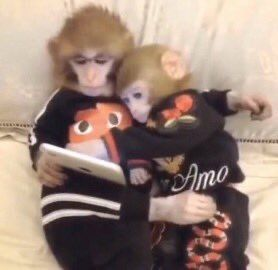
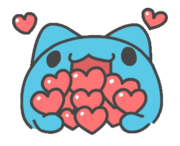
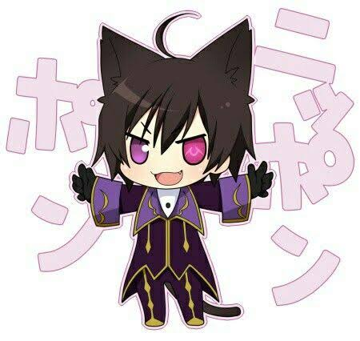
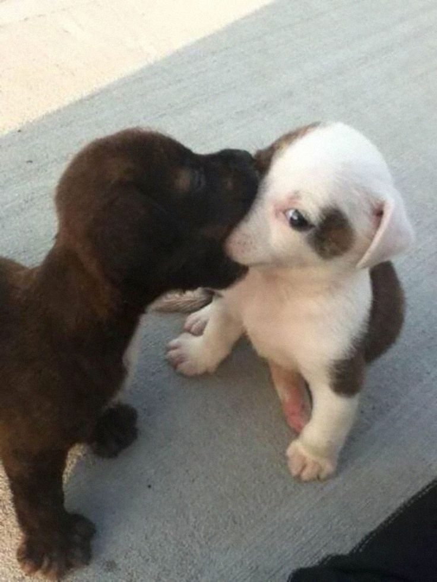
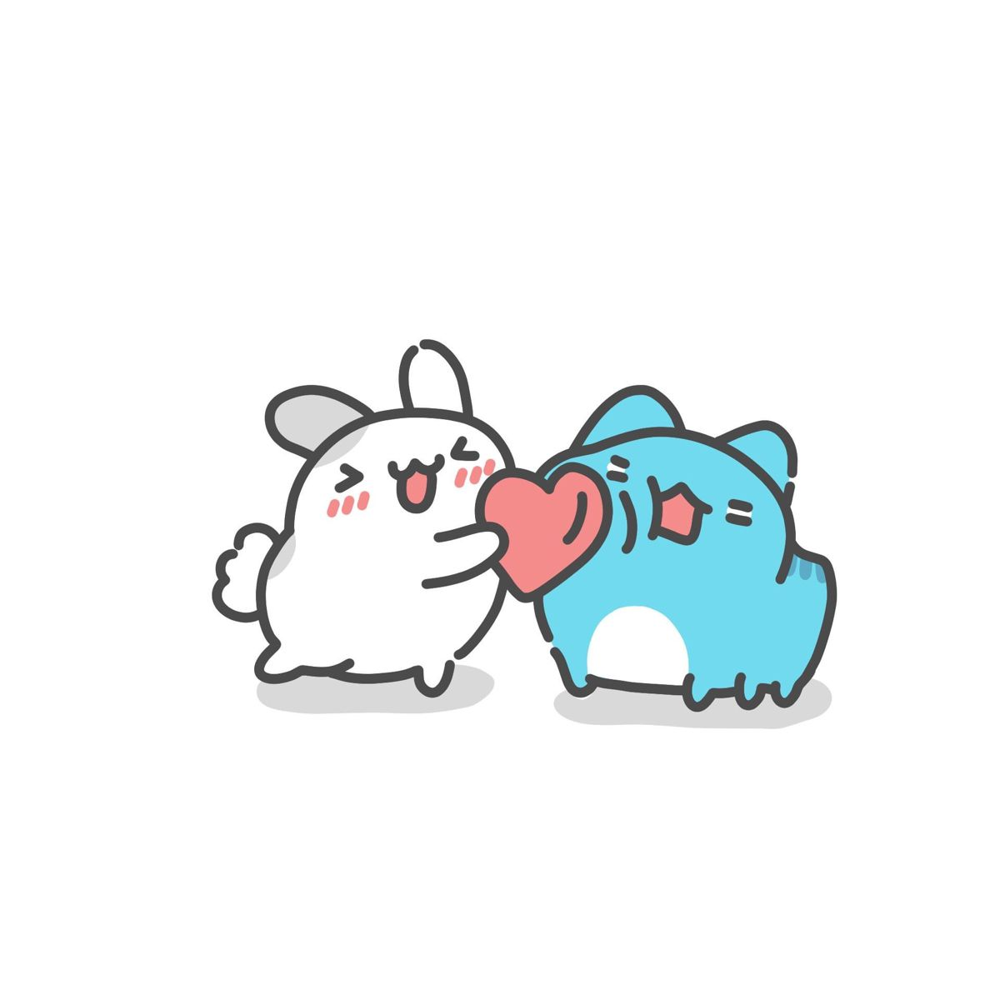
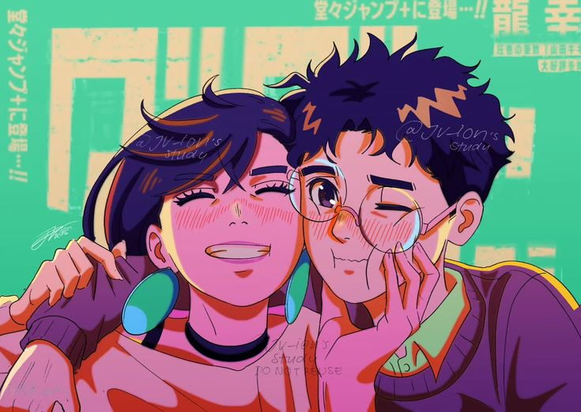
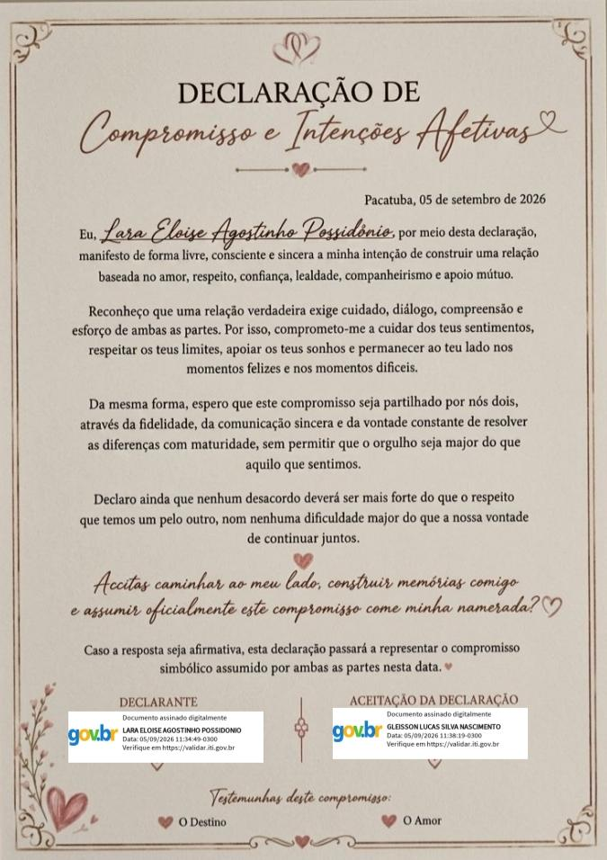

💌
Abra quando sentir saudade
Para os dias em que a distância apertar.
uma pequena lembrança para alguém muito especial
Glesinho, talvez você nem imagine o quanto esses últimos dois meses se tornaram especiais para mim.
Quero te mostrar uma coisa ↓Cada dia trouxe uma nova lembrança.
um pedacinho da nossa história
horas : minutos : segundos
Tudo começou quando você respondeu ao meu story. E eu, do outro lado, fiquei naquele dilema: “Respondo ou não respondo?” KKKKKK. No fim, ainda bem que eu respondi... porque eu nem imaginava que aquela mensagem tão simples seria o começo de tanta coisa boa entre a gente.
Aos poucos, a gente foi encontrando nossas próprias desculpas pra começar uma conversa... até que os reels de bolos gostosos viraram praticamente um motivo oficial pra gente se falar de novo. Um mandava, o outro respondia, e quando a gente percebia, já estávamos conversando por horas.
Em algum momento, você deixou de ser só alguém que eu gostava de conversar e passou a ser alguém que eu queria ter cada vez mais na minha vida. E, quando percebi que estava apaixonada, veio a parte mais difícil: falar “eu te amo” primeiro. Eu tinha tanta vergonha, ficava pensando mil vezes antes de falar e tentando criar coragem kkkkk. Mas a verdade é que, mesmo com toda a vergonha, meu coração já tinha certeza do que sentia por você.
E agora, dois meses depois, eu só consigo pensar no quanto é gostoso ter você na minha vida. Gosto da nossa companhia, das nossas conversas, das brincadeiras, do carinho e, principalmente, da forma leve que tudo acontece entre a gente. Dois meses podem parecer pouco, mas quando é com você, parece que já existe uma história inteira ali. E eu espero que esse seja só o começo de muitas outras coisas que ainda vamos viver juntos.
Glesinho,
Eu queria conseguir colocar em palavras tudo o que esses dois meses significaram para mim, mas, sinceramente, acho que algumas coisas são difíceis de explicar.
É muito doido pensar que, há pouco tempo, você era alguém que eu nem conhecia. A gente se conheceu pelo Instagram, começou a conversar e, quando eu percebi, você já tinha se tornado alguém muito especial para mim.
Em tão pouco tempo, você conseguiu ocupar um espaço enorme nos meus pensamentos e no meu coração. E eu gosto muito de como tudo foi acontecendo naturalmente, sem a gente precisar forçar nada.
Eu gosto das nossas conversas, das nossas brincadeiras, das besteiras que a gente fala, dos momentos em que você me faz rir e, principalmente, do jeito carinhoso e atencioso que você me trata.
Gosto de conhecer cada pedacinho seu, de descobrir seus jeitos, suas manias e até aquelas pequenas coisas que talvez você nem perceba, mas que fazem eu gostar ainda mais de você.
E mesmo com a distância entre a gente, você conseguiu se fazer presente de um jeito que eu não esperava. É engraçado como alguém que está a alguns quilômetros de mim consegue parecer tão pertinho em tantos momentos.
Obrigada por cada conversa que a gente teve, por cada risada, cada carinho, cada momento em que você me fez sentir especial e por todos esses pequenos momentos que, juntos, fizeram esses dois meses serem tão importantes para mim.
Eu não sei exatamente tudo o que ainda vai acontecer com a gente, e talvez seja justamente isso que torne tudo tão bonito. Só sei que estou muito feliz por ter te conhecido e por estar vivendo essa história com você.
Espero que esses dois meses sejam apenas o começo de muitos outros momentos, muitas conversas, muitas risadas e, quem sabe, muitos momentos que ainda vamos viver juntos.
Porque, se depender de mim, essa história ainda tem muita coisa bonita para acontecer. ❤️
Meu amor, nem sempre vou estar pertinho para te abraçar quando você precisar. Então deixei algumas cartinhas guardadas aqui, para você abrir quando sentir vontade de ler um pouquinho do que sinto por você. Escolha uma. ❤️
Para os dias em que a distância apertar.
Um lembrete de que você não precisa dar conta de tudo.
Para nunca esquecer como essa história começou.
A gente ainda não tem fotos juntos.
Então eu pensei: por que colocar fotos que não existem quando podemos guardar aqui algumas coisas que ainda vão acontecer?
Talvez essa seja a parte mais bonita da nossa história: ela ainda está sendo escrita, meu amor 😊
Depois de tantas conversas através de uma tela,
vai chegar o dia em que eu finalmente vou poder
te abraçar de verdade.
E tenho certeza que vai ser um daqueles momentos
que a gente vai lembrar por muito tempo.
Hoje esse espaço está vazio.
Mas um dia vai existir uma foto nossa aqui.
E provavelmente ela vai ser uma das fotos
mais especiais que a gente já tirou.
Hoje existem 40,8 km entre nós.
Mas eu gosto de pensar que cada quilômetro
é só um pedacinho do caminho que separa
duas pessoas que decidiram ficar próximas
mesmo assim.
Um dia em que a gente não precise se despedir
porque está tarde.
Sem chamadas precisando acabar,
sem “boa noite” pela tela e sem saudade
logo depois de desligar.
Só nós dois.
nosso primeiro beijinho
ainda esperando por nós...
“Essa foto ainda não existe... mas eu já estou ansiosa para vê-la.”
— Larinha ❤️Talvez a melhor parte de tudo seja saber que ainda existem muitos momentos nossos que nem aconteceram. ❤️
Hoje, nossos abraços ainda precisam esperar um pouquinho.
Meu amor, existem quilômetros entre o meu cantinho e o seu, mas eu gosto de pensar que essa distância é apenas uma parte da nossa história, não aquilo que define o que a gente sente.
Um dia, em vez de olhar para um mapa para imaginar onde você está, eu vou poder olhar para o lado e ver você pertinho de mim. E vou lembrar de todas as vezes em que a gente fez a distância parecer um pouquinho menor. ❤️
Ver o caminho até você 🗺️

O jeito que você demonstra carinho faz tudo ficar mais especial.

Você consegue me fazer sorrir até quando eu não estava esperando.

Admiro muito a pessoa inteligente e dedicada que você é.

Sempre tem alguma coisa que faz eu querer continuar conversando.

Tem alguma coisa entre nós que é difícil explicar, mas muito fácil sentir.

E talvez essa seja a coisa mais simples e mais importante de todas.
Porque algumas músicas simplesmente começam a lembrar uma pessoa.
Criamos essa playlist juntos neste mês, e eu acho muito bonito ter um cantinho onde as músicas também podem guardar um pedacinho da nossa história.
Talvez algumas músicas façam a gente lembrar de conversas, de brincadeiras ou simplesmente daqueles momentos em que estávamos juntos, mesmo cada um no seu cantinho. E quem sabe, no futuro, a gente escute tudo isso lado a lado e lembre de quando essa playlist começou a existir. ❤️
Abrir nossa playlist no Spotify ♡
Nosso acordo, assinado por nós dois. ♡
Entre Lara e Glesinho, fica registrado este documento extremamente sério (ou quase KKKKK), criado para guardar uma das nossas pequenas particularidades como casal.
Considerando que as partes decidiram compartilhar carinho, conversas, risadas e uma quantidade questionável de saudade, ficam estabelecidos os seguintes princípios:
E, acima de tudo, fica registrado que este relacionamento merece cuidado, respeito, companheirismo e a liberdade de sermos nós mesmos.
Assinado com carinho por:
Larinha ♡
Glesinho ♡
De todas as coincidências que poderiam ter acontecido, eu gosto muito daquela em que nossos caminhos se encontraram.
Glesinho, quando a gente olhar para esse site daqui a alguns anos, espero que possamos sorrir vendo quantas coisas que hoje são apenas sonhos já viraram lembranças. E, se algum dia você esquecer como tudo começou, quero que volte aqui para lembrar que, desde o comecinho, você já era alguém muito especial para mim. ❤️